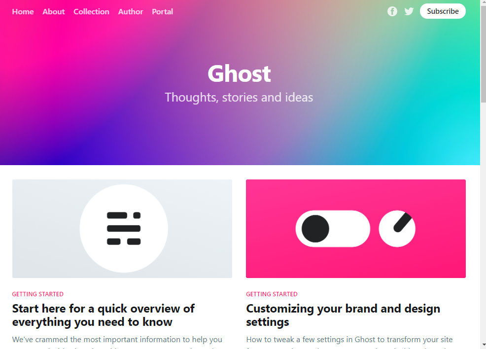
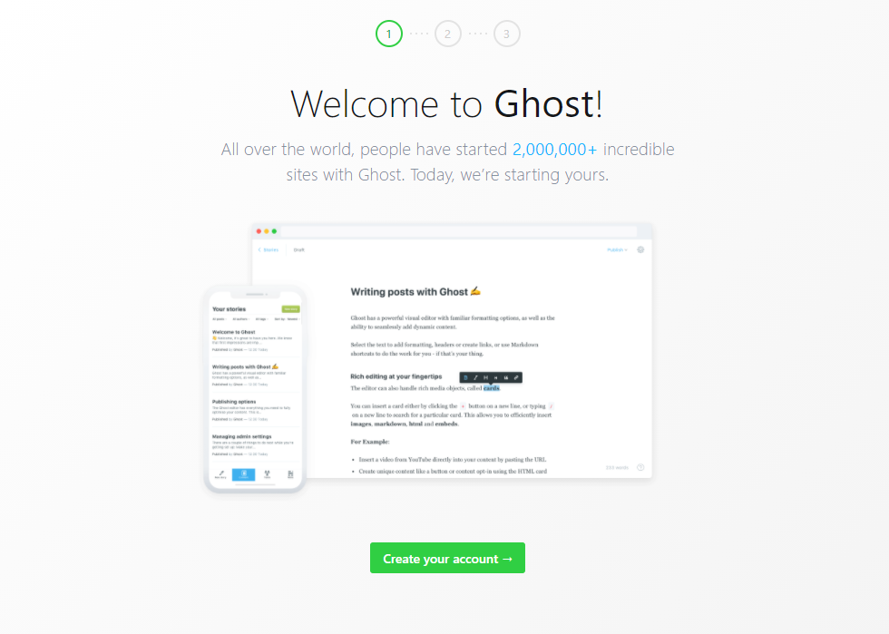
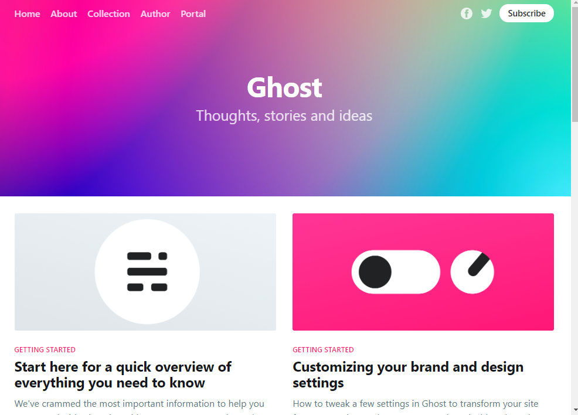
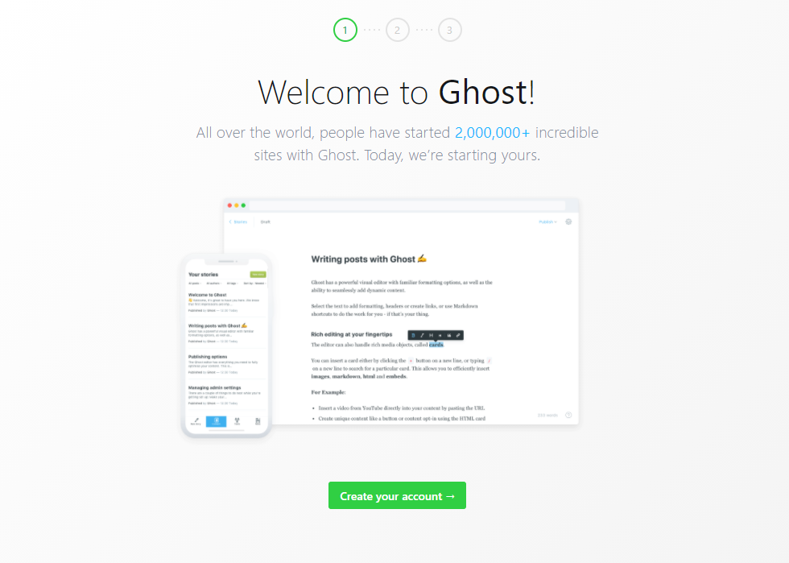

ВСР Тема 4. Развёртывание веб-ресурса на платформе vscale.io с использованием Docker
Для развёртывания веб-ресурса на платформе vscale.io необходимо создать аккаунт.
После создания аккаунта необходимо создать сервер с готовым образом Docker:

После создания сервера необходимо подключиться к нему по SSH с использования логина и пароля или SSH-ключа.
Веб-ресурсом может являться сайт на CMS Ghost.js, которую можно установить с помощью Docker-контейнера.
Для установки контейнера необходимо выполнить команду:

Панель администратора доступна по адресу

После создания аккаунта необходимо создать сервер с готовым образом Docker:
После создания сервера необходимо подключиться к нему по SSH с использования логина и пароля или SSH-ключа.
Веб-ресурсом может являться сайт на CMS Ghost.js, которую можно установить с помощью Docker-контейнера.
Для установки контейнера необходимо выполнить команду:
docker pull ghost
docker run -d --name some-ghost -e url=http://localhost:3001 -p 3001:2368 ghost
server_ip:3001
Панель администратора доступна по адресу
server_ip:3001/ghost